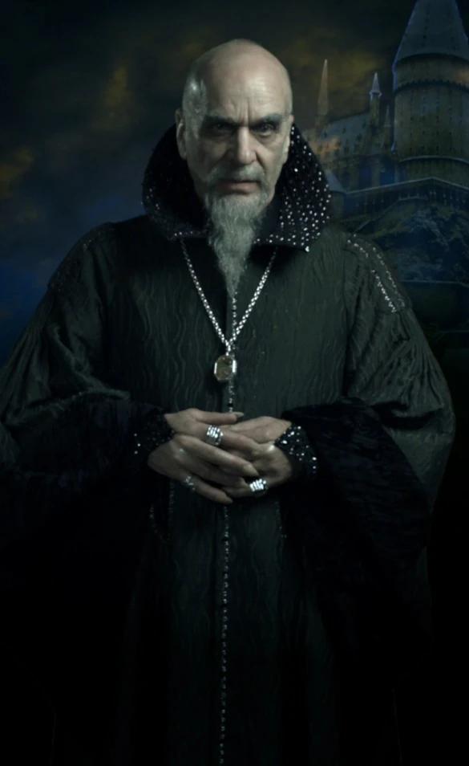

Slytherin
Salazar Slytherin
La Casa Slytherin es una de las cuatro casas en la escuela de magia Hogwarts. Fundada por Salazar Slytherin, esta casa valora la astucia, la ambición y la determinación en sus estudiantes. Los miembros de Slytherin suelen ser conocidos por su ingenio y habilidades para alcanzar sus objetivos. Aunque a veces se asocia con la pureza de la sangre, no todos los Slytherins comparten esta creencia, ya que la casa acoge a estudiantes de diversos orígenes mágicos. Los colores de la casa son verde y plata, y su animal representativo es la serpiente. Slytherin tiene una larga historia en Hogwarts y ha producido muchos magos y brujas destacados a lo largo de los años.